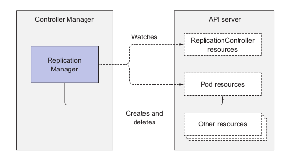

Arquitectura de Kubernetes¶
kubernetes¶
![[KubernetesArchitecture.png.png]]
Componentes¶
Control Plane¶
Aqui es donde están los elementos que manejan el comportamiento del cluster pero que no ejecutan nada de las aplicaciones de los containers.
Componentes¶
- etcd
- API Server #api-server
- Scheduler
- Controller Manager
The Nodes ( workers )¶
Aqui es donde se ejecutan los containers de la aplicación.
Componentes¶
- Kubelet
- Kubernetes Service Proxy (kube-proxy)
- Conainer Runtime (Docker, rkt ... )
Add-on Components¶
A parte de los componentes del Control Plane y de los nodos se necesitan unas cuantas cosas para que todo funcione bien
- Kubernetes DNS Server
- Dashboard
- Ingress Controller
- Heapster
- Container Network Interface network plugin
Como se comunican¶
Todos se comunican con el API server.
El API server es el único que se comunica con la base de datos.
Todos modifican el estado de la base de datos hablando con el API server.
La comunicación es siempre comenzada por los otros elementos salvo en algunos casos especiales donde el API server es quien comienza la conexion.
- Cuando usamos kubectl para obtener los logs
- Cuando usamos kubectl attach
- Cuando usamos kubectl port-forward
Ejecutando multiples instancias.¶
Todos los elementos que tienen los Worker Nodes tienen que correr en el mismo worker node. ( supongo que en cada nodo tienen que estar todos los elementos)
Sin embargo los elementos del control plane pueden ser ejecutados en distintos servidores.
Se pueden ejecutar multiples instancias de los elementos del Control plane para tener HA. Sin embargo:
- Etcd y API server pueden tener varias instancias funcionando en paralelo
- Scheduler y Controller Manager solo pueden tener una instancia funcionando al mismo tiempo mientras que las demás están en stand-by
Como se ejecutan los componentes¶
Todos los componentes del control plane y el kube-proxy pueden ejecutarse en el sistema directamente o pueden ejecutarse como pods en el master node.
El unico que tiene que ejecutarse como un componente de sistema siempre es Kubelet
Como se usan los componentes¶
Como utiliza K8s ETCD¶
Es el único sitio donde se guardan los manifiestos de todos los componentes que se crean en el cluster. Es una base de datos clave-valor distribuida, lo que permite poder tener multiples instancias para tener HA
El unico que se comunica con el etcd es el API Server. Esto tiene unas ventajas - Se puede cambiar la base de datos con facilidad adaptando el API server. - Puede implementarse un sistema de locking optimista - Se puede hacer validacion de los elementos antes de guardarlos o de recuperarlos.
Como se guardan las cosas en etcd¶
Hay dos versiones en uso v2 y v3 ( aunque seguramente ahora la v2 ya no se use porque la v3 tiene mejor performance.)
En v2 - Las claves son jerarquicas y estan guardadas en arbol, por lo que puede pensarse en la clave de una entrada como en el nombre completo de un fichero en un arbol de directorios. - Por tanto cada clave es: - O bien un directorio que a su vez contiene otras claves - O bien una clave regular que contiene un valor.
En v3
- No soporta el concepto de directorios per se, pero como las claves siguen siendo organizadas de manera jerárquica y se pueden poner /, podemos seguir pensando en ellas como el nombre completo de un fichero dentro de un filesystem.
Todos los datos que kubernetes guarda en etcd se guardan debajo de /registry
title: Listado de entradas en etcd
V2
```bash
$ etcdctl ls /registry
```
V3: Las entradas cuya clave empieza por un prefijo determinado.
```bash
$ etcdtl get /registry --prefix=true
```
Salida
```bash
/registry/configmaps
/registry/daemonsets
/registry/deployments
/registry/events
/registry/namespaces
/registry/pods
...
```
title : pods en el namespace default
collapse: true
```bash
$ etcdctl ls /registry/pods/default
/registry/pods/default/kubia-159041347-xk0vc
/registry/pods/default/kubia-159041347-wt6ga
/registry/pods/default/kubia-159041347-hp2o5
```
y esto es lo que se guarda de una entrada en particular
```bash
$ etcdctl get /registry/pods/default/kubia-159041347-wt6ga
{"kind":"Pod","apiVersion":"v1","metadata":{"name":"kubia-159041347-wt6ga",
"generateName":"kubia-159041347-","namespace":"default","selfLink":...
```
Como puede verse es un documento en formato json.
Consistencia en ETCD cuando hay un cluster.¶
Como podemos tener multiples instancias de etcd en un cluster tenemos que asegurar que hay consistencia en el estado que muestran todas.
Para esto se utiliza el [[Algoritmo RAFT]] Es un algoritmo de consenso, de manera que para transicionar a un nuevo estado, mas de la mitad de los nodos tienen que estar de acuerdo. En este algoritmo se asegura que una determinada instancia de etcd o bien muestra el ultimo estado al que se ha llegado o bien muestra uno de los antiguos estados a los que se llego por consenso.
Si se produce un split brain, si una de las particiones tiene la mayoria de los nodos evidentemente la otra no los tendrá. Por tanto la primera particion si que podrá transicionar de estado porque tienen la mayoria, mientras que la otra no podrá modificar el estado del cluster, quedándose en un estado válido., Cuando la situacion se solucione los nodos que estaban en un estado antiguo, pero valido, podrán recuperarse y hacer catch-up.
Debido a la necesidad de quorum es mejor siempre tener un numero impar de instancias de etcd. Teniendo un numero par no aumentamos el numero de fallos de instancias a los que somos resilientes, pero si que aumentamos la posibilidad de fallo, ya que a mas instancias en el cluster mas posibilidades de que alguna falle.
Normalmente los clusters mas grandes de etcd tienen CINCO o SIETE instancias, lo que permite manejar sin problemas el fallo de DOS o TRES instancias, lo que suele ser suficiente en la mayoria de los casos.
Que hace el API server¶
Intro¶
- Es el componente que todos los demas componentes, incluido el
kubectlutilizan para poder interactuar con el sistema. - Provee un interface CRUD sobre un API Rest
- Guarda todos los datos en ETCD
- Provee consistencia en los datos que se guardan
- Chequea los datos que los demas componentes quieren guardar en etcd antes de guardarlos para evitar estados inconsistentes del sistema
- Implementa un Optimistic Locking system
- Dado que podemos tener multiples instancias de API server ejecutandose de manera concurrente tenemos que evitar que los cambios puedan sobreescribir otros cambios que se estén haciendo en ese momento
'kubectl' es uno de los clientes del API server.
Cuando creamos un nuevo recurso con un fichero `yaml` lo que hace es enviar un HTTP POST con el fichero en formato json y esto es lo que pasa en el API Server
![[APIServerHTTPPOST.png]]
Stages¶
Authentication¶
Lo primero que se hace es autenticar al cliente que envia la peticion. Se envia la peticion a una lista de plugins de autenticacion que esten configurados en el API server, pasando por todos hasta que uno de ellos sea capaz de determinar quien es el cliente que envia la peticion.
Authorization¶
Una vez que sabemos quien es el cliente que pide la accion y que podemos confiar en el, tenemos que ver si dicho cliente tiene autorizacion para poder hacer dicha accion sobre el recurso que esta pidiendo hacerla. Para esto estan los plugins de autorizacion. La peticion va pasando por los plugins hasta que uno de ellos dice que el cliente puede realizar al accion sobre el recurso pedido.
Admision Control¶
Las operaciones de Creacion, Modificacion y Borrado de recursos pasan por una fase adicional, la de Control de Admision.
En esta fase la peticion pasas por todos los plugins. Estos plugins pueden modificar la peticion - Añadiendo valores por defecto que no existen en el recurso de la peticion - Cambiando valores del recursos que exceden limites Incluso pueden modificar recursos relacionados que no estén en la peticion
Tambien pueden validad y rechazar la peticion por el contenido que tiene.
title: Ejemplos de Admission Control Plugins.
- `AlwaysPullImages` -> Sobreescribe el `imagePullPolicy` de los Pods y lo pone a `Always`
- `ServiceAccount` -> Aplica un `ServiceAccount` por defecto a todos los Pods que no definen uno.
- `NamespaceLifecycle` -> Evita que se puedan crear Pods en namespaces que están en proceso de borrado o que no existen.
- `ResourceQuota` -> Se asegura que los Pods de un determinado namespace solo puedan utilizar unas cantidades de CPU y memoria determinadas
How API Server Notifies clients.¶
El API server permite que los demas componentes pidan ser notificados cuando un recurso es Creado Modificado o Borrado, de manera que pueda hacer lo que sea que tenga que hacer en respuesta a esta operacion.
El Cliente abre una conexion HTTP al API server y a través de dicha conexion el cliente recive un stream de moficiaciones. Cada vez que uno de los objetos observados cambia se le envia al cliente la nueva version del objeto.
Este mecanismo lo usa por ejemplo el kubectl cuando pedimos que nos haga un watch de los pods
kubectl get pods -o yaml --watch
Tambien lo utiliza el Scheduler
Entendiendo el funcionamiento del Scheduler¶
Controllers ejecutandose en el Controller Manager.¶
Intro¶
Hasta ahora tenemos en el control plane: - ETCD: que solo guarda los manifiestos. - API Server: que es un interface para que los demas puedan guardar cosas en la base de datos y ser notificados - Scheduler: Que se encarga de asingar nodos a los nuevos pods.
Pero no tenemos nadie que haga nada para mantener el estado del cluster conciliado con el estado de los manifiestos guardados en la base de datos.
Esto es lo que hace el Controller Manager, o para ser mas exactlos la lista de controllers que se ejecutan en el.
Todos los controller se al formar parte del Control Plane, se ejecutan en el Master Node
Controllers en general¶
Actualmente ( no tengo claro que eso sea cierto ahora mismo) un solo proceso Controller Manager combina dentro de el varios controllers distintos que realizan distintas labores. Eventualmente cada uno de estos controllers será separado en un proceso distinto para que sea mas sencillo cambiarlos.
Lista de Controllers:
- Replication Manager -- Un controller para ReplicationController resources
- ReplicaSet Controller
- DaemonSet Controller
- Job Controller
- Deployment Controller
- StatefulSet Controller
- Node Controller
- Service Controller
- Endpoints Controller
- Namespace Controller
- PersistentVolumeController
- Others ... que cachondo.
Basicamente hay un Controller por cada uno de los recursos de kubernetes.
Los recursos son una declaracion de cual queremos que sea el estado de un cluster. Los Controllers realizan el trabajo de intentar conciliar el estado actual del cluster con el que queremos que sea.
En general los controllers tienen un "reconciliation loop" donde intentan hacer esta reconciliacion del estado creando, modificando o borrando determinados recursos.
[!note]- En cada recurso el
speces donde ponemos el estado esperado mientras que los controllers escriben en elstatusel estado actual.
Utilizan el sistema de notificacion del API server para saber cuando se modifican los recursos a los que atienden. Tambien tienen una operacion "re-list" que ejecutan periodicamente por si acaso han perdido alguna notificacion.
Los Controllers no hablan nunca unos con otros. Los Controllers no saben ni que existen otros controllers.
Solo hablan con el API server nada mas. Cada uno hace su parte y esperan que todo funcione correctamente.
Algunos controllers¶
Replication Manager¶
Basicamente espera ser notificado de los Pods y los [[Kubernetes ReplicationController|ReplicationController]] que se van creando, destruyendo o modificando para comprobar si lo que se ha puesto en los [[Kubernetes ReplicationController|ReplicationController]] se sigue cumpliendo. En el caso de que el número de pods no sea el esperado realiza las operaciones adecuadas para poder llegar al estado deseado.

Si necesita crear nuevos pods utiliza el spec.template del [[Kubernetes ReplicationController|ReplicationController]] para enviar un HTTP POST al API Server con el nuevo manifiesto para que se desencadene la creacion de un nuevo pod.
El Replication Manager hace su trabajo solo modificando los manifiestos de los recursos mediante el API server como hacen todos los demas controllers
ReplicaSet Controller, DaemonSet Controller y Job Controller¶
Los tres hacen basicamente lo mismo que el Replication Manager, solo que usando distintos recursos... [[Kubernetes ReplicaSet]], [[Kubernetes DaemonSet]] y [[Kubernetes Job]]
Deployment Controller¶
Gestiona las actualizaciones de los [[Kubernetes Deployment|Deployment]]. Hace un roll-out del deployment cuando se modifica. Basicamente crea un nuevo [[Kubernetes ReplicaSet|Replicaset]] y despues realiza una escalacion tanto del antiguo como del nuevo [[Kubernetes ReplicaSet|Replicaset]] basandose en la estrategia definida en el [[Kubernetes Deployment|Deployment]] hasta que todos los viejos Pods han desaparecido y han sido reemplazados por los nuevos.
StatefulSet Controller¶
Como los demas Controllers el StatefulSet Controller crea y destruye pods de acuerdo con la especificacion de los [[Kubernetes StatefulSet|StatefulSet]]. Además es el único que tambien maneja los [[Kubernetes PersistentVolumeClaims| PersistentVolumeClaims]] para cada instancia de Pod
Node Controller¶
Maneja los [[Kubernetes Node Resources|Node Resources]] que describen los workers de un cluster.
Entre otras cosas mantiene una lista actualizada de los nodos del cluster monitorizando las maquinas que se añaden o quitan. Tambien monitoriza la salud de los nodos y elimina los Pods de los nodos que no pueden ser alcanzados.
Service Controller¶
Cuando un [[Kubernetes Service]] de tipo LoadBalancer se crea se pide un LoadBalancer al sistema para poder hacer el Servicio visible desde el exterior.
Este controler es el encargado de realizar la operacion de pedir el recurso y de liberarlo cuando no es necesario.
Endpoints Controller¶
Los [[Kubernetes Service]] no son enlazados directamente a los Pods, si no que contienen una lista de los endpotins (IP + Puerto), lista que es actualizada de acuerdo con el pod selector del [[Kubernetes Service]]
El Endpoints Controller es el encargado de mantener la lista de endpoints constantemente actualizada con las IPs y puertos de los Pods que matchean el label selector
![[KubernetesEndpointsManager.png]]
Namespace Controller¶
Cuando un namespace es borrado todos los recursos que pertenezcan a dicho namespace deben ser borrados. Esto es lo que hace el controller.
PersistentVolume Controller¶
Cuando un usuario crea un [[Kubernetes PersistentVolumeClaims]] kubernetes tiene que encontrar el [[Kubernetes PersistentVolume]] al que poder enlazarlo.
Esto es justamente lo que hace este controller.
Cuando se crea un nuevo [[Kubernetes PersistentVolumeClaims]] este controller intenta encontrar el mejor match para el. - Busca el [[Kubernetes PersistentVolume]] mas pequeño que tenga el modo de acceso adecuado y que tenga una capacidad suficiente para el claim.
Para esto mantiene una lista ordenada de [[Kubernetes PersistentVolume]] para cada uno de los modos de acceso por orden ascendente de capacidad ( asi que solo tiene que devolver el primero de la lista.)
Cuando el [[Kubernetes PersistentVolumeClaims]] es borrado el [[Kubernetes PersistentVolume]] es reclamado por el controller de acuerdo con la politica de reclaim ... ( puede quedarse como está, ser borrado, ser vaciado...)
Kubelet¶
Intro¶
Al contrario que los controllers tango kubelet como kube-proxy se ejecutan en los worker nodes, que es donde se ejecutan los containers de las aplicaciones.
Responsabilidades¶
Kubelet es el responsable de todo lo que sucede en un worker node.
Lo primero que tiene que hacer es registrar el nodo en el cluster, para eso crea un [[Kubernetes Node Resources]] usando el API Server.
A partir de ese momento monitoriza todos los Pods para ver cuales son asignados por el Scheduler para ser ejecutados en su nodo, y cuando esto sucede habla con el Container Runtime que haya configurado para que se ejecuten los containers del Pod.
También monitoriza constantemente los containers de los Pods que están ejecutandose en su Nodo para poder reportar su estatus, eventos y consumo de recursos al API Server.
Kubelet tambien es el responsable de ejecutar los liveness probes, rearrancar los containers cuando la probe falle y por último ser quien borre los contenedores cuando el Pod sea borrado.
Ejecutando Pods staticos sin el API Server.¶
Normalmente kubelet obtiene los manifiestos de los pods que tiene que ejecutar del API server, pero tambien puede ejecutar otros Pods obteniendo los manifiestos de un directorio del Nodo en el que se ejecuta.
Esto se utiliza principalmente para poder ejecutar componentes del Control Plane como Pods en lugar de como procesos del master node.
Kubernetes Service Proxy¶
Los Worker Nodes tambien ejecutan el kube-proxy.
El único cometido de kube-proxy es asegurarse que cuando llamamos a uno de los [[Kubernetes Service]] la llamada termina en uno de los Pods que está dando soporte a dicho servicio.
Cuando hay mas de un Pod dando soporte a dicho servicio se realiza un load-balancing.
Se llama kube-proxy porque en la primera de las implementaciones era un proceso en espacio de usuario que había modificado las [[IP tables]] para que las peticiones a los servicios fueran redirigidas a él y luego fuese el quien las reenviase a los Pods adecuados. Todas las conexiones pasaban por él.
Ahora hay una implementación mucho mejor en performance que simplemente modifica la configuracion de las [[IP tables]] para que las conexiones vayan a parar al Pod directamente sin pasar por el proceso kube-proxy, por lo que ya no es un proxy estrictamente hablando, pero el nombre se le ha quedado.
La diferencia principal entre los dos modos es que en el antiguo al tener que pasar todos los mensajes por el kube-proxy todos tenian que pasar por el espacio de usuario, lo que era una putada para el performance.
Ademas el antiguo hacía un round robin entre los pods de un servicio mientras que el nuevo lo hace de manera aleatoria.
Kubernetes Add-ons¶
Hay algunos otros componentes que, sin ser extrictamente necesarios, permiten realizar acciones interesantes en el cluster. Son los add-ons.
Estos componentes se instalan en el sistema como Pods, enviando sus manifiestos al API server como cualquier otro pod. Algunos de ellos se instalan mediante [[Kubernetes Deployment|Deployment]] u otro tipo de recurso de k8s
title: Algunos add-ons
Podemos ver como en Minikube el Ingress Controller y el Dashboard son instalados mediante un [[Kubernetes ReplicationController|ReplicationController]]
```bash
$ kubectl get rc -n kube-system
NAME DESIRED CURRENT READY AGE
default-http-backend 1 1 1 6d
kubernetes-dashboard 1 1 1 6d
nginx-ingress-controller 1 1 1 6d
```
Mientras que el DNS es un [[Kubernetes Deployment|Deployment]]
```bash
$ kubectl get deploy -n kube-system
NAME DESIRED CURRENT UP-TO-DATE AVAILABLE AGE
kube-dns 1 1 1 1 6d
Como funciona el DNS server¶
Todos los pods en un cluster estan configurados para utilizar el DNS interno por defecto.
El DNS se expone mediante un servicio kube-dns para poder asi mover los pods dentro del cluster sin problema.
La direccion IP del servicio esta configurada como el nameserver en el fichero /etc/resolv.conf dentro de cada container instalado en el cluster.
kube-dns utiliza el mecanismo de notificaciones del API server para observar cambios en los [[Kubernetes Service]] y en los [[Kubernetes Endpoint|Endpoints]] y actualiza sus tablas internas con cada uno de los cambios.
Durante el momento en el que se actualiza un [[Kubernetes Service]] o un [[Kubernetes Endpoint]] hasta que el kube-dns recibe la notificacion y actualiza sus registros puede que haya información erronea en el DNS
Ejemplo de como funciona todo junto¶
Todo kubernetes esta formado por pequeños elementos muy poco acoplados con una buena separacion de responsabilidades ( cada uno hace una cosa y solo una puta cosa) y esa es la razón por la que todo funciona bien
Vamos a ver como funcionan todas las piezas en armonía para la creacion de un Pod. Normalmente no se crea un Pod desde cero, de modo que vamos a ver como se realiza la creacion de un Pod, pero partiendo del manifiesto de un Deployment.
Antes siquiera de empezar ya tenemos la siguiente figura, donde cada uno de los componentes está escuchando las notificaciones adecuadas del API server respecto a los recursos que le son interesantes ( normalmente solo uno o un par a lo sumo)
![[KubernetesWatchingResources.png]]
Bien, una vez que kubectl en via mediante un HTTP POST el manifiesto del deployment al API Server esta es la cadena de acontecimientos que se desata.
![[KubernetesPodCreationChainAction.png]]
Se pueden ver todos los eventos que van sucediendo en el cluster mediante el siguiente comando de kubectl
kubectl get events --watch
Entendiendo que pasa cuando se ejecuta un POD¶
Cuando ejecutamos un Pod en uno de los nodos no solo se ejecutan los containers que tenemos definidos en el pod, si no que ademas se ejecuta otro pod.
Supongamos que solo tenemos un container en el pod para hacerlo mas sencillo.
$ kubectl run nginx --image=nginx
deployment "nginx" created
Si vamos al nodo en el que se está ejecutando el pod podemos ver los siguientes contenedores ejecutandose.
docker@minikubeVM:~$ docker ps
CONTAINER ID IMAGE COMMAND CREATED
c917a6f3c3f7 nginx "nginx -g 'daemon off" 4 seconds ago
98b8bf797174 gcr.io/.../pause:3.0 "/pause" 7 seconds ago
Podemos ver que hay un contenedor adicional ejecutandose
- Dicho contenedor no está ejecutando nada porque esta en pause
- Ademas podemos ver que se ha creado antes que el contenedor que teniamos definido en el pod
Ese contenedor es parte de la infraestructura
- Todos los contenedores de un mismo pod comparten algunos linux namespaces como por ejemplo el espacio de red ...
- Este contenedor es el que contiene todos los linux namespaces que son compartidos por todos los contenedores de un mismo pod.
![[KubernetesPodInfraContainer.png]]
Todos los contenedores del mismo pod tienen que compartir los mismos linux namespaces aunque se reinicien, pero eso es posible porque estos están en este container, de manera que aunque los demás se reinicien los namespaces se mantienen.
El ciclo de vida de este contenedor esta ligado intimamente al del pod.
Si por cualquier motivo este container resultase parado, kubelet volvería a recrearlo y después recrearía todos los demas containers del pod para poder asignarles los linux namespaces del nuevo container.
Interpod networking¶
- Cada pod tiene un IP unica
- Todos los pods pueden comunicarse entre si mediante conexiones "planas" es decir sin NAT
Kubernetes no es quien configura esto, es el administrador quien tiene que conseguirlo. Kubernetes solo pone el requisito.
La red tiene que estar configurada de tal manera que la IP que un Pod ve de si mismo sea la misma que los demás pueden ver de él. Todos los containers deben de poder comunicarse entre ellos independientemente de si estan siendo ejecutados en el mismo o en distintos nodos.